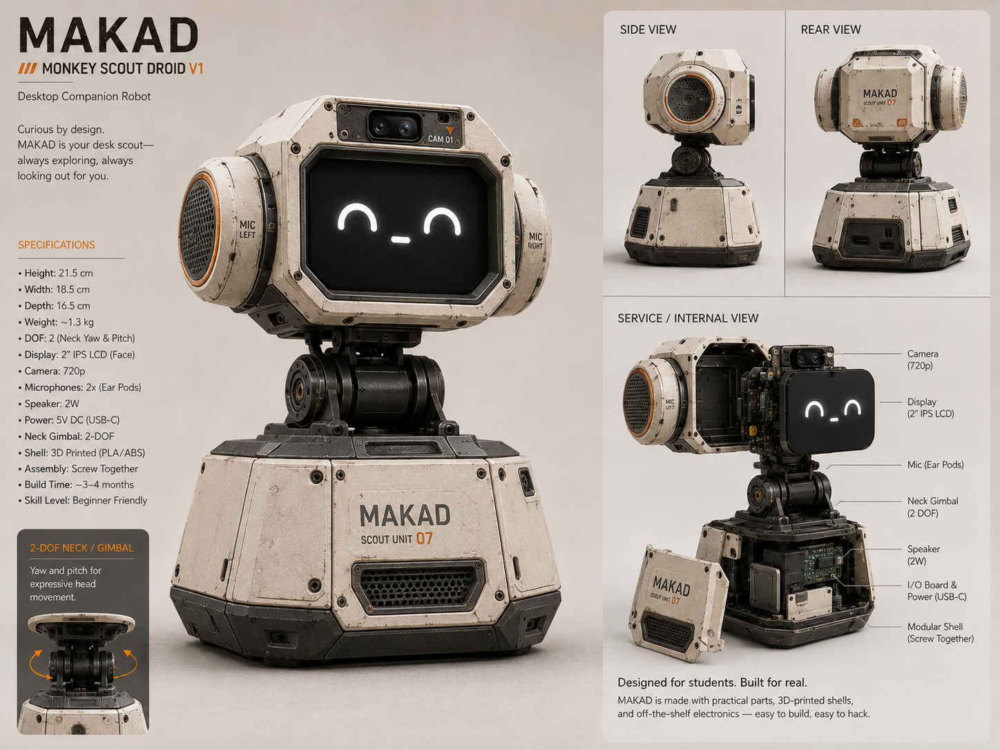
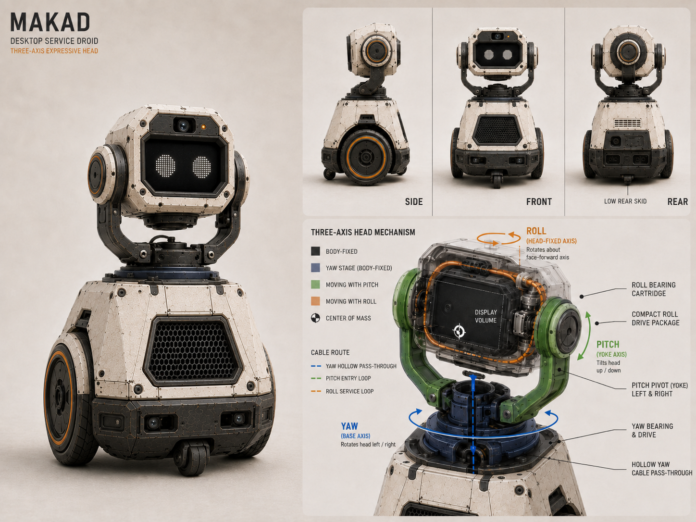

M4K4-D / Makad
Which IP actually applies to an expressive AI floor droid — and which doesn't
github.com/JiyaSingh18/M4K4-D
What is Makad & why IP matters here
Makad is my design project — a ~30 cm AI companion droid. Most of its value is creative work I authored, running on third-party AI and open-source libraries.
The product
Makad (M4K4-D) coordinates face, 3-axis head, astromech audio, and wheels into one expressive character. Cloud NLU and vision handle speech and tracking — but the personality layer is mine.
Priority: "M4 should feel alive." That makes copyright and licensing the real IP questions — not patents or trademarks.
Why analyse IP now?
- Before V1 demo I need to know what I own, what I must license, and what I cannot copy
- Public GitHub repo means some IP choices are already made — I can't claim trade secrets on published code
- Companion robot industry (Anki Vector) shows IP around character + cloud dependency matters more than hardware specs
Which IP types actually fit Makad?
Not every IP category applies to a student design project. This deck covers only what's relevant — and explains what I'm deliberately not claiming.
| IP type | Applies to Makad? | Why / why not |
|---|---|---|
| Copyright Yes — primary | Core protection | Animations, astromech sounds, head motion storyboard, renders, firmware, docs — all original works I authored. Automatic protection on creation (§13, Copyright Act 1957). |
| Open-source & API licensing Yes — practical | Obligation, not ownership | LVGL, OpenCV, Pi firmware, cloud NLU APIs, Spotify — I must comply with their licenses and ToS. I don't own the models; I own my integration layer. |
| Derivative-work risk Yes — caution | Inbound IP risk | Star Wars droid genre is fine; copying R2-D2 likeness, sounds, or Disney marks is not. Makad's design, name, and audio are original. |
| Patent Not now | Not pursued | 3-axis head in this size class has prior art (desktop robots, research platforms). Filing cost and novelty bar don't fit a Dec 2026 student V1. |
| Trademark Not now | Not pursued | "Makad" isn't a commercial product yet — no market, no confusion risk to resolve. Would matter only if I productized. |
| Trade secret Not now | Contradicts repo | Architecture and storyboard are public on GitHub. Can't claim secrecy on what I've already published. |
Copyright — Makad's main IP asset
What copyright protects in my project
- Astromech audio — builder-authored droid sounds, not TTS or copied Star Wars FX
- Face animations — LVGL expressions, idle loops, reactive eyes on ESP32
- Head motion storyboard — 19 keyframe sequences (HM-00→HM-18), authored by me
- Concept renders & CAD — industrial design visuals in the repo
- Source code — firmware, behaviour system, expression composer timing logic
- Documentation — vision doc, system brief, 14 specsheets, decision log
Key point: Copyright covers the expression — not the idea of "a cute robot." Makad's moat is coordinated character behaviour, not any single AI model.

What Makad uses but doesn't own

Third-party layers in the stack
- Cloud NLU / STT — speech → intent via API; model weights and outputs governed by provider ToS, not my copyright
- OpenCV / MediaPipe — OSS vision libraries; my tuning code is mine, library stays under its license
- LVGL, ESP-IDF, Pi OS — must preserve license notices and respect copyleft where applicable
- Spotify API — playback only under developer terms; can't rebrand or embed outside allowed use
- Hardware (Waveshare, Pi) — off-the-shelf modules; no IP claim on the board itself
Thaler v. Perlmutter (2023): AI alone cannot be an author. Makad's protectable layer is everything I designed — not raw model output.
Inspiration vs infringement — the Star Wars line
What's safe in Makad
- Original name — "Makad" / "M4K4-D" / "M4", not R2-D2 or BB-8
- Original astromech sounds — composed for this project, not ripped from films
- Original silhouette & proportions — wheeled floor droid, own head cartridge design
- Genre inspiration — "astromech companion" is a trope; specific expressive copy is not
What would cross the line
- Using Lucasfilm/Disney protected character likeness or trademarked droid names
- Reproducing film-accurate R2 sound effects or visual decals
- Marketing as "Star Wars robot" rather than an original character
For V1: Makad reads as inspired by the astromech archetype — original design, original audio, original behaviour choreography.
Anki Vector — copyright & cloud dependency in practice
Industry parallel: an AI companion robot whose survival depended on who owned the character layer — not patent filings.
What happened
- Anki (2013–2019) — Vector had cloud NLU, expressive face, personality behaviours
- Company shut down April 2019 — cloud servers offline, robots lost core features
- Assets sold to Digital Dream Labs — codebase and character IP transferred, not open by default
- Community (Wire-Pod) revived robots only after DDL eventually open-sourced server code
Lessons for Makad
- Character IP survived — animations, behaviour logic, personality = the valuable layer (copyright + trade dress, not patents)
- Cloud NLU is a dependency risk — Makad uses APIs too; ToS and service continuity matter
- Open docs help continuity — my architecture is on GitHub so the project survives even if a cloud provider changes
- Expression layer is mine — astromech vocabulary + motion storyboard = Makad's identity, same role Vector's personality played
Where AI meets IP in Makad — owned vs borrowed
| Component | Who owns it | IP implication |
|---|---|---|
| Cloud NLU / STT | API provider | I own intent mappings and character responses built on top — not the model |
| Person tracking (Pi Cam) | My integration code | OSS libraries + my tuning — copyright on my layer, license compliance on theirs |
| Face animations | Me — fully authored | Strongest copyright asset; not AI-generated |
| Astromech sounds | Me — human-composed | Sound recordings under §13; full copyright |
| Head motion profiles | Me — storyboard v0.2 | Research-informed (Plos One nod data) but keyframes and timing are original |
| Expression composer | Me — system design | Copyright on code + docs; coordinates face/head/sound as one authored work |
Gaps, risks & honest evaluation
Real risks for Makad
- No copyright registration filed yet — protection is automatic but registration strengthens proof
- License audit incomplete — OSS stack (LVGL, OpenCV, Pi) needs a tracked compatibility list
- Cloud AI ToS — commercial use of API outputs may be restricted depending on provider
- Camera + mic — DPDP Act 2023 / IT Rules apply to person tracking; separate from copyright
- Public repo — good for academic transparency; means no trade-secret claim on published assets
What I'm not worried about
- Patent race — not competing commercially; prior art covers similar mechanisms
- Trademark squatting — "Makad" has no market presence to defend yet
- AI authorship dispute — all creative layers are human-designed; AI is a tool in the pipeline
Conclusion: Makad's defensible IP is the authored expression layer — animations, sounds, motion choreography, and integration code. Everything else is licensed or borrowed.
Practical IP plan before V1 demo
- Document human authorship — trace every animation, sound, and motion to my design decisions (needed for copyright validity post-Thaler)
- Copyright registration — file astromech audio + face animation assets + storyboard before public demo if budget allows
- License audit — BOM of all OSS components with license type and attribution requirements
- API ToS review — confirm cloud NLU and Spotify terms allow demo/recording use
- Keep original assets clean — no film rips, no Disney marks, no copied sound FX in the astromech library
- Skip patent/trademark for now — revisit only if Makad moves beyond academic prototype to product
References & anticipated questions
Sources
- Indian Copyright Act, 1957 (copyright.gov.in)
- Thaler v. Perlmutter, D.D.C. 2023
- US Copyright Office AI Registration Guidance (2023)
- Anki shutdown — TechCrunch 2019; Wire-Pod docs
- Plos One 2024 — nod kinematics (RP-01 reference)
- M4K4-D repo: github.com/JiyaSingh18/M4K4-D
- India DPDP Act 2023 · EU AI Act 2024
Q&A prep
- "Why not patent the head?" → Prior art exists; student V1 doesn't justify filing cost or novelty bar.
- "Is Makad a Star Wars copy?" → Genre inspiration ≠ derivative work. Design, name, sounds are original.
- "Who owns cloud NLU output?" → Provider's ToS. I own the character layer built on top.
- "Biggest IP risk?" → Using third-party assets without license audit; or crossing into Disney protected likeness.
- "What would you file?" → Copyright on astromech audio + animations — the only IP type that clearly fits now.
Thank you
Questions?
Jiya Singh · 2309397